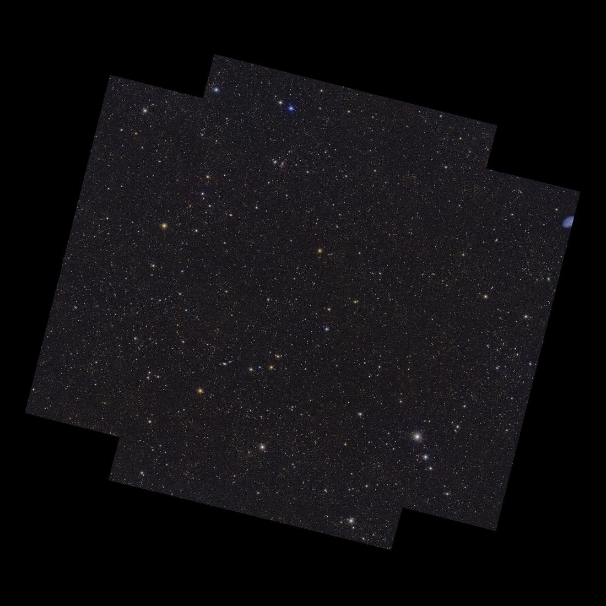
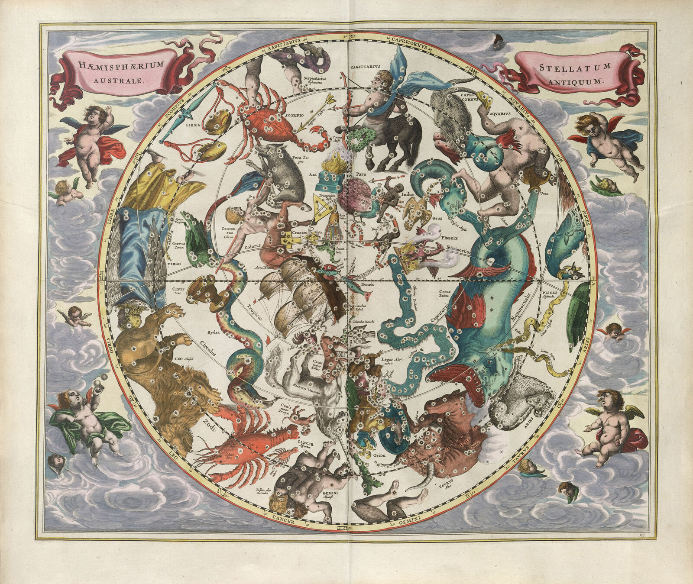

Department of Physics and Astronomy
University of Bologna
Via Piero Gobetti 93/2
40129 Bologna, Italy
University of Bologna
Via Piero Gobetti 93/2
40129 Bologna, Italy


§ 06 · CONTACT
Get in touch
ESA/Euclid/Euclid Consortium/NASA, Euclid Deep Field Fornax, Q1 preview (CC BY-SA 3.0 IGO)
Andreas Cellarius, Haemisphaerium Stellatum Australe Antiquum, Harmonia Macrocosmica (1661)